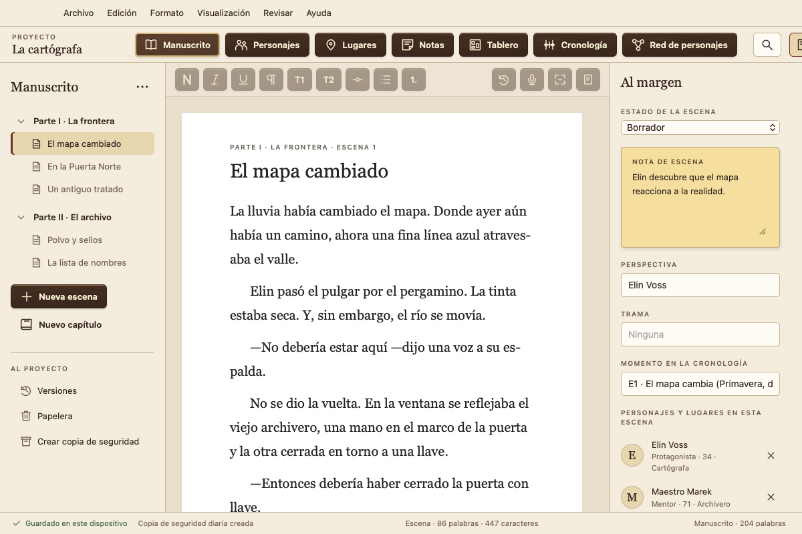
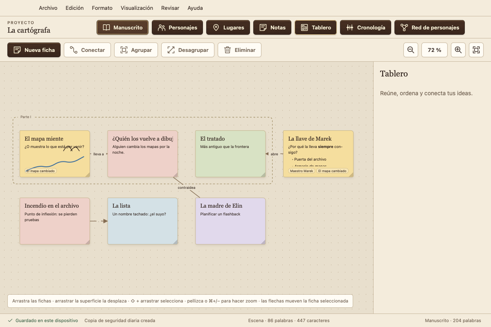
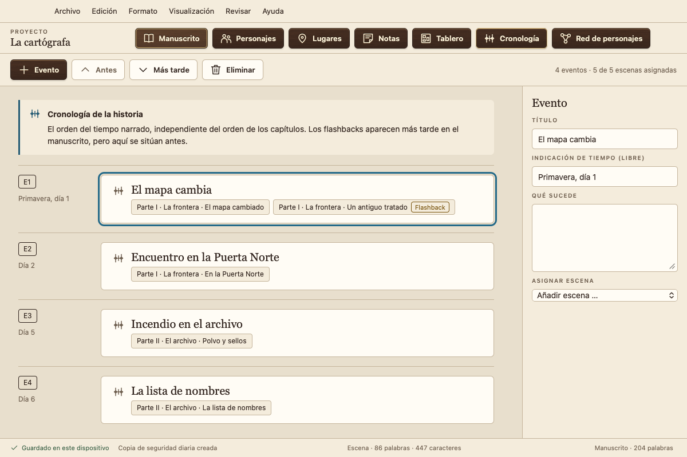
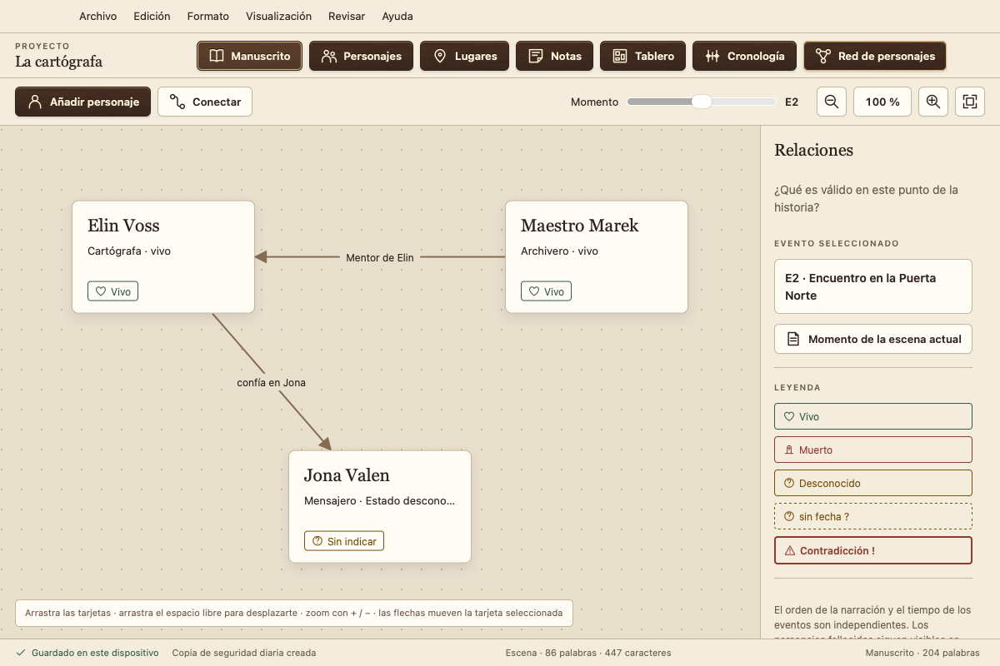
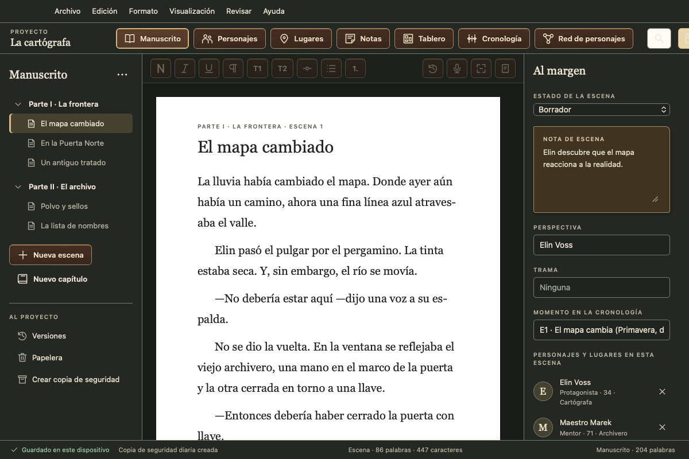

La app gratuita para escribir novelas
Su manuscrito se queda con usted: sin suscripción, sin cuenta, sin recopilación de datos y sin entrenamiento de IA. Para Mac, Windows, Linux y Android.
Versión 0.1.6 · fase de pruebas · 6 idiomas · descargas

Todo lo que su libro necesita, en un solo lugar
Capítulos y escenas
Escriba por escenas, arrástrelas para cambiar su orden y no pierda el hilo gracias al estado, la perspectiva y la nota de cada escena.
Personajes y lugares
Perfiles de personaje con campos propios. Atramentum detecta quién aparece en cada escena.
Tablero
Tarjetas con texto, listas y bocetos, agrupadas y conectadas entre sí, vinculadas a escenas y personajes.
Cronología
Los acontecimientos en el tiempo de la historia. Atramentum reconoce los flashbacks cuando el orden del libro no coincide con la cronología.
Red de personajes
Las relaciones y la situación de sus personajes en cualquier momento de la historia. ¿Quién sigue vivo en el capítulo 12?
Página normalizada, Word y libro electrónico
Exportación a PDF como página normalizada o ejemplar de lectura, a Word, a libro electrónico (EPUB, también para Kindle mediante KDP), a Markdown o a texto sin formato, si lo desea con portada, dedicatoria, página de créditos y formato de página propio. Importación desde Word, Scrivener, Markdown y texto sin formato.
Revisar
Análisis de estilo con legibilidad, frases largas, repeticiones y muletillas. Revisión ortográfica y gramatical de todo el manuscrito con el corrector de su sistema. Comparar versiones y escuchar el texto en voz alta.
Visión general
Esquema como tabla o fichas de escenas, etiquetas de color y palabras clave. Abrir otra escena o una ficha de personaje junto al texto.
Véalo en acción




Sus palabras le pertenecen
Local y sin conexión
Atramentum guarda todo en su dispositivo y funciona sin internet. Nunca envía sus textos ni sus datos personales a ninguna parte.
No se pierde nada
Cada cambio se guarda al instante. Además, dispone de versiones de cada escena, una papelera, copias de seguridad diarias y una herramienta de rescate.
En todos sus dispositivos
Sincronización a través de una carpeta en su propio servicio en la nube (iCloud Drive, Dropbox, OneDrive…), sin cuenta en nuestros servidores.
Descarga
| Sistema | Descarga | Guía |
|---|---|---|
| Mac macOS 13 o posterior, Apple silicon e Intel | .dmg | Instalar en Mac |
| Windows 10 y 11, 64 bits | Instalador (.exe) | Instalar en Windows |
| Linux Ubuntu, Debian, Mint | .deb | Instalar en Linux |
| Linux todas las demás | AppImage | Instalar en Linux |
| Android 7 o posterior, teléfono y tableta | .apk | Instalar en Android |
Atramentum no está notarizado por Apple ni firmado con un certificado de Microsoft. Los certificados cuestan dinero cada año y Atramentum es gratuito. Por eso macOS y Windows piden una confirmación antes del primer inicio; las guías explican cómo abrirlo de todos modos. iPhone y iPad llegarán a través de la App Store.
Fase de pruebas: haga copias de seguridad con regularidad y cuénteme lo que observe. Las sumas de verificación y las herramientas de rescate están en la página de la versión.